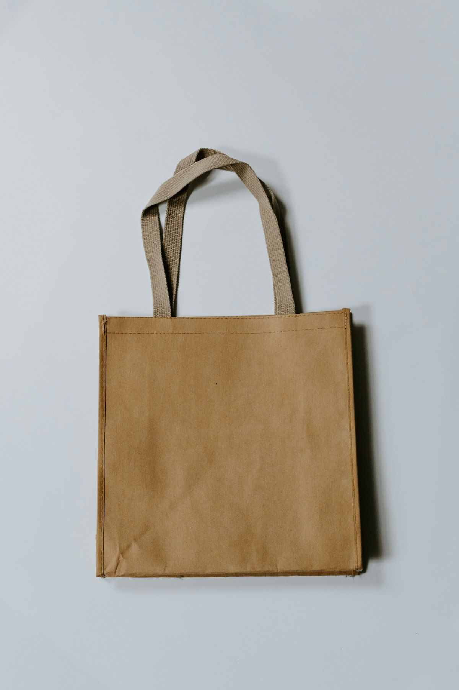

Wool Science
The Science of Merino Wool: Microns, Crimp, Thermoregulation & Elasticity
15.5-micron fiber diameter, natural spiral crimp, hydrophilic core vapor evacuation, and itch-free prickle threshold physics.